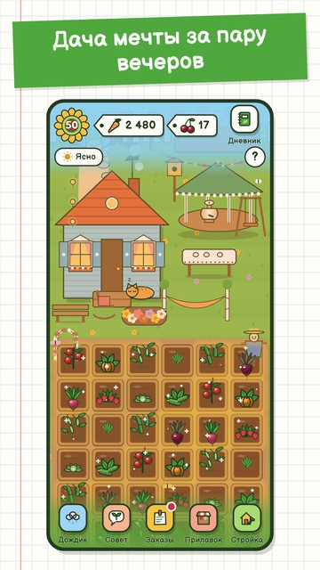

Дача
Заросший участок, покосившийся домик… и шесть соток возможностей.
Мой участок, моя дача: расчисти землю, засей грядки, встречай соседей и превращай участок в место мечты: с теплицей, беседкой, самоваром и котом на крыльце.

- Сажай, собирай, продавай: редис, огурцы, помидоры, клубника, яблони и ещё два десятка культур.
- Дача растёт даже без тебя: возвращайся и забирай урожай и выручку с прилавка у дороги.
- Заказы соседей: баба Нина, дядя Миша, тётя Люба и Серёжа с рынка всегда что-то просят.
- Колорадский жук, заморозки и дожди: дача живая, но без суровых наказаний.
- Свой домик: беседка, самовар, гамак, куры, погреб с закатками.
- Заказ дня: у всех дачников одинаковый, пропущенный ждёт в дневнике неделю.
- Задания дня и цель недели: каждый день есть зачем заглянуть.
- Четыре сезона и праздники: Первомай, Яблочный Спас, Праздник урожая и Новый год — с украшениями на память.
- Играй без интернета, на русском и английском. Без покупок.